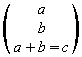
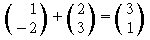
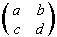
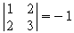

| [zurück] | [Hauptmenü] | [weiter] |
OpenOffice.org Formel
07 - Vektor und Matrix
Grundlegend werden Vektor und Matrix durch eine Kombination von zwei Befehlen erzeugt. Die eine Befehlsgruppe macht die Klammer. Darin eingebaut ist die Anweisung die Elemente untereinander (Vektor) oder in einer Matrix anzuordnen.
Am besten wieder einige Beispiele, an denen man deutlich sieht, dass auch das keine große Kunst ist:
| Kommando-Eingabefeld | Formel |
|---|---|
left (
stack { a # b # a+b=c } right ) |

|
left ( stack { alignr 1 # -2
} right ) + |

|
left ( matrix { a # b
## |

|
abs matrix { 1 # 2 ## 2 #
3 } = -1 |

|
Zusammenfassend gesagt: Vektoren werden mittels des Kommandos
stack aufgerufen und die Elemente mit dem
#-Zeichen getrennt. Bei der Matrix ist es ganz
ähnlich, das Kommando heißt matrix und die
Elemente werden durch das #-Zeichen zeilenweise
getrennt eingegeben; die Zeilen werden durch ##
getrennt. Leere Einträge kann man übrigens mit einem
leeren Struktur-Klammernpaar
{} angeben.
| [zurück] | [Hauptmenü] | [weiter] |
© Copyright 2003, Harald Schilly
This documentation is part of "Erste Schritte: OpenOffice.org Textdokument", which is released
under the terms of the PDL.
For full copyright and license info read the index page.